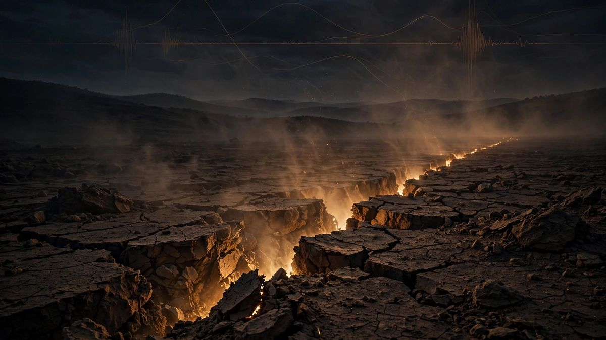

पनामा में 7.7 तीव्रता का भूकंप; सुनामी का खतरा हटाया गया
USGS ने पिटलोज़ा अरिबा के पास सतही भूकंप को समीक्षित 7.7 तक बढ़ा दिया; पनामा, कोलंबिया, इक्वाडोर, निकारागुआ और ग्वाटेमाला के लिए सुनामी चेतावनी बाद में हटा दी गई, और पनामा नहर सामान्य रूप से संचालित हो रही है। PAGER के लाल अलर्ट में कुछ हताहतों की संभावना की चेतावनी है।

मुख्य बिंदु
- *अद्यतन 03:05 UTC: विकासशील खबर।*
- पनामा सिटी: शुक्रवार दोपहर पनामा में 7.7 तीव्रता का भूकंप आया, जिससे राजधानी हिल गई और मध्य तथा दक्षिण अमेरिका के प्रशांत तटों पर सुनामी का खतरा घोषित किया गया, जिसे अधिकारियों ने बाद में हटा…
- भूकंप पूर्वी समयानुसार दोपहर 1:56 बजे (17:56 UTC) दक्षिणी पनामा के पिटलोज़ा अरिबा के लगभग 12 किलोमीटर पश्चिम-दक्षिणपश्चिम में आया, जिसकी गहराई लगभग 12.6 किलोमीटर थी, USGS ने बताया। एजेंसी ने पहले…
*अद्यतन 03:05 UTC: विकासशील खबर।*
पनामा सिटी: शुक्रवार दोपहर पनामा में 7.7 तीव्रता का भूकंप आया, जिससे राजधानी हिल गई और मध्य तथा दक्षिण अमेरिका के प्रशांत तटों पर सुनामी का खतरा घोषित किया गया, जिसे अधिकारियों ने बाद में हटा दिया, अमेरिकी भूवैज्ञानिक सर्वेक्षण (USGS) के अनुसार।
भूकंप पूर्वी समयानुसार दोपहर 1:56 बजे (17:56 UTC) दक्षिणी पनामा के पिटलोज़ा अरिबा के लगभग 12 किलोमीटर पश्चिम-दक्षिणपश्चिम में आया, जिसकी गहराई लगभग 12.6 किलोमीटर थी, USGS ने बताया। एजेंसी ने पहले तीव्रता 8.0 अनुमानित की थी, जिसे समीक्षा के बाद 7.7 कर दिया गया। 560 से अधिक लोगों ने भूकंप महसूस होने की रिपोर्ट दर्ज की, और USGS के शेकमैप का अनुमान है कि केंद्र के पास तीव्र से हिंसक कंपन, तीव्रता VIII से IX, हुआ।
सुनामी का खतरा जारी, फिर हटाया गया
अमेरिकी सुनामी चेतावनी प्रणाली ने कहा कि पनामा के कुछ तटों पर 1 से 3 मीटर ऊंची लहरें संभव हैं। कोलंबिया, इक्वाडोर, निकारागुआ और ग्वाटेमाला के लिए भी सुनामी का खतरा जारी किया गया। चेतावनी केंद्र के अनुसार इक्वाडोर में 3 फीट तक की लहरें संभव हैं, जबकि कोस्टा रिका, पेरू, अल सल्वाडोर, होंडुरास, मैक्सिको और चिली के हिस्सों में हल्की लहरों का पूर्वानुमान है। संयुक्त राज्य अमेरिका के लिए कोई सुनामी खतरा नहीं था।
चेतावनी प्रणाली ने बाद में कहा कि अब कोई खतरा नहीं है, और USGS के इस भूकंप के रिकॉर्ड में अब सुनामी ध्वज नहीं है। पूरे प्रशांत क्षेत्र में सुनामी की कोई संभावना नहीं थी।
अब तक अधिकारियों को क्या ज्ञात है
CNN द्वारा सत्यापित फुटेज में केंद्र से लगभग 70 मील दूर पेनोनोमे में क्षतिग्रस्त इमारतें दिखीं, आंशिक रूप से ढहे घंटाघर वाला चर्च और ढही हुई मुखौटे वाली एक और इमारत। प्लाया वेनाओ के पर्यटक शहर में एक बहुमंजिला इमारत ढह गई और नीचे खड़ी कई कारें कुचल गईं। पनामा नहर के किनारे सेंटेनियल ब्रिज के निलंबन केबल वाहन गुजरते समय हिलते दिखे, हालांकि नहर प्राधिकरण ने कहा कि संचालन सामान्य रूप से जारी है।
पनामा सिटी में इमारतों के हिलने पर निवासी सड़कों पर निकल आए। रिपोर्टों के अनुसार पड़ोसी कोस्टा रिका की राजधानी सैन जोस और कोलंबिया के हिस्सों में भी झटके महसूस किए गए। शहर की मेट्रो ने दो लाइनों पर सेवा निलंबित कर दी और कुछ स्टेशनों से यात्रियों को निकाला; शिक्षा मंत्रालय ने देशभर में कक्षाएं रद्द कर दीं; मुख्य अंतरराष्ट्रीय हवाई अड्डे ने एहतियात के तौर पर संचालन निलंबित कर दिया; और जल एवं सीवरेज संस्थान ने बिजली कटौती के बाद कई जल उपचार संयंत्रों में व्यवधान की सूचना दी।
USGS की PAGER प्रणाली ने इस भूकंप को लाल अलर्ट, अपने उच्चतम स्तर, दिया है। उसने अनुमान लगाया कि भूकंप से हुए भूस्खलन और तरलीकरण की गंभीरता महत्वपूर्ण हो सकती है, और कुछ हताहत संभव हैं तथा व्यापक क्षति की संभावना है, यह प्रारंभिक आकलन जमीनी क्षति रिपोर्टें पूरी तरह एकत्र होने से पहले किया गया था।
पनामा के राष्ट्रपति होसे राउल मुलिनो ने शांति की अपील की, प्रभावित क्षेत्रों के लिए सरकारी संसाधन जुटाए और कहा कि वे स्वयं प्रतिक्रिया के समन्वय में भाग लेंगे। पनामा में अमेरिकी दूतावास ने कहा कि वह संभावित क्षति का आकलन कर रहा है और देश में मौजूद अमेरिकी नागरिकों से अद्यतन जानकारी के लिए अपने यात्री कार्यक्रम में नामांकन करने को कहा।
शाम तक झटकों की शृंखला बढ़ती रही: बाजो कोराल के पास 5.5 तीव्रता का, काकाओ के पास 5.8 का, और 20:25 UTC पर रियो ग्रांडे के लगभग 14 किलोमीटर पश्चिम में 6.6 का, अब तक का सबसे बड़ा झटका, जिसे USGS ने समीक्षा के बाद प्रारंभिक 6.9 से घटा दिया।
यह भूकंप 2026 का तीसरा सबसे शक्तिशाली भूकंप था, दो 7.8 तीव्रता के भूकंपों के बाद, एक 7 जून को फिलीपींस में और दूसरा 14 अगस्त को इंडोनेशिया में।
झटके जारी हैं, लेकिन कोई मौत दर्ज नहीं
रिपोर्टों के अनुसार, शुक्रवार शाम तक पनामा विश्वविद्यालय के भूकंप वैज्ञानिकों ने 45 से अधिक झटके दर्ज किए थे, जिनमें से अधिकांश इतने हल्के थे कि महसूस नहीं हुए। राष्ट्रपति मुलिनो ने शुक्रवार शाम कहा कि अधिकारियों ने अब तक किसी मौत की पुष्टि नहीं की है, लेकिन चेतावनी दी कि आने वाले घंटों या दिनों में यह बदल सकता है। स्थानीय मीडिया ने बताया कि लॉस सांतोस प्रांत का औपनिवेशिक शैली का कैथोलिक चर्च सैन अतानासियो, जिसे 1938 में राष्ट्रीय ऐतिहासिक धरोहर घोषित किया गया था, ढह गया है। वेरागुआस प्रांत में सड़कों पर बड़ी दरारें पड़ गईं।
शुक्रवार शाम तक किसी मौत की पुष्टि नहीं हुई थी; केवल कई मामूली घायल होने की पुष्टि हुई। यह एक विकासशील खबर है और नई जानकारी के सत्यापन के साथ इसे अद्यतन किया जाएगा।
स्रोत
- USGS: M 7.7 - 12 km WSW of Pitaloza Arriba, Panama
- Reuters: 7.6 magnitude earthquake felt in Panama: USGS (via Google News wire alert)
- CNN: Powerful earthquake shakes Panama
- Fox Weather: Magnitude 7.6 earthquake shakes Panama, triggering tsunami threat
- USA Today: Massive 7.7 magnitude earthquake strikes Panama, tsunami threat issued
- Q13 Fox: Massive 7.6-magnitude earthquake strikes Panama, triggering aftershocks
- Weather.com: Panama earthquakes, aftershocks updates and damage
- The Hindu BusinessLine (AP): Second 6.6-magnitude tremor follows 7.7 quake
देखें
टाइमलाइन
- Oct 9, 20267.7 तीव्रता का भूकंप (समीक्षा किया गया) दोपहर 1:56 ET पर Pitaloza Arriba के पास दक्षिणी पनामा में आता है; USGS शुरुआती 8.0 अनुमान को संशोधित करता है; PAGER लाल अलर्ट; उपरिकेंद्र के पास गंभीर से अत्यंत तीव्र झटकों का अनुमान है।
- Oct 9, 2026अमेरिकी सुनामी चेतावनी प्रणाली पनामा, कोलंबिया, इक्वाडोर, निकारागुआ और ग्वाटेमाला के लिए सुनामी का खतरा जारी करती है; खतरा बाद में हटा लिया जाता है और प्रशांत क्षेत्र में व्यापक सुनामी की उम्मीद नहीं है। पनामा नहर प्राधिकरण कहता है कि नहर सामान्य रूप से चल रही है।
- Oct 9, 2026आफ्टरशॉक का क्रम शाम भर बढ़ता है: Bajo Corral के पास 5.5, Cacao के पास 5.8, और सबसे बड़ा, 6.6 तीव्रता का, Río Grande से 14 km पश्चिम में 20:25 UTC पर, जिसे USGS की समीक्षा के बाद प्रारंभिक 6.9 से घटाया गया।
- Oct 9, 2026अधिकारी कई मामूली चोटों की खबर देते हैं, लेकिन कोई मौत या लापता व्यक्ति नहीं है; Tocumen अंतरराष्ट्रीय हवाई अड्डा एहतियाती बंद के बाद फिर से काम शुरू करता है; Mulino Penonome के एक अस्पताल का दौरा करते हैं, जहां निकाले गए मरीजों का इलाज बाहर किया जा रहा है।
- Oct 9, 2026शुक्रवार शाम तक पनामा विश्वविद्यालय के भूकंपविदों ने 45 से अधिक आफ्टरशॉक दर्ज किए थे, जिनमें से अधिकांश इतने कमजोर थे कि महसूस नहीं हो सके; Mulino कहते हैं कि कोई मौत दर्ज नहीं हुई थी, लेकिन चेतावनी देते हैं कि यह बदल सकता है; स्थानीय मीडिया बताता है कि Los Santos में 1938 की विरासत वाला San Atanasio चर्च ढह गया और Veraguas में बड़ी दरारों ने सड़कों को चीर दिया।
स्रोत
- USGS: M 7.7 - 12 km WSW of Pitaloza Arriba, Panama
- Reuters: 7.6 magnitude earthquake felt in Panama - USGS (via Google News wire alert)
- CNN: Powerful earthquake shakes Panama
- Fox Weather: Magnitude 7.6 earthquake shakes Panama, triggering tsunami threat
- USA Today: Massive 7.7 magnitude earthquake strikes Panama, tsunami threat issued
- Q13 Fox: Massive 7.6-magnitude earthquake strikes Panama, triggering aftershocks
- Weather.com: Panama earthquakes, aftershocks updates and damage
- The Hindu BusinessLine (AP): Second 6.6-magnitude tremor follows 7.7 quake